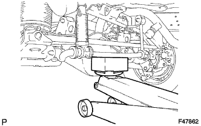

ЗАДНЯЯ ЦИЛИНДРИЧЕСКАЯ ВИНТОВАЯ ПРУЖИНА (для моделей без пневматической подвески) > УСТАНОВКА |
| 1. УСТАНОВИТЕ ПОЛУЮ ПРУЖИНУ В СБОРЕ (для 5-дверных моделей) |
Установите полую пружину на раму.
| 2. УСТАНОВИТЕ ЛЕВУЮ ЗАДНЮЮ ЦИЛИНДРИЧЕСКУЮ ВИНТОВУЮ ПРУЖИНУ |
Установите заднюю цилиндрическую винтовую пружину на кожух задней полуоси.
| 3. ВРЕМЕННО ЗАКРЕПИТЕ ЛЕВЫЙ ЗАДНИЙ АМОРТИЗАТОР В СБОРЕ |
Временно закрепите нижнюю часть амортизатора болтом.
| 4. УСТАНОВИТЕ НИЖНИЙ КРОНШТЕЙН ЗАДНЕГО СТАБИЛИЗАТОРА (для моделей с KDSS) |
|  |
Поддомкратьте задний стабилизатор поперечной устойчивости.
 |
Установите штангу заднего стабилизатора и 2 нижних кронштейна заднего стабилизатора, закрепив их 4 болтами.
| *1 | Цилиндр управления заднего стабилизатора |
| *2 | Стойка заднего стабилизатора |
| 5. ДОБЕЙТЕСЬ УСТОЙЧИВОСТИ ПОДВЕСКИ |
Опустите автомобиль.
Стабилизируйте подвеску, несколько раз покачав автомобиль вверх-вниз.
| 6. ЗАКРЕПИТЕ ЛЕВЫЙ ЗАДНИЙ АМОРТИЗАТОР В СБОРЕ |
Затяните болт.
| 7. ПОДСОЕДИНИТЕ ГИБКИЙ ШЛАНГ ЗАДНЕГО ТОРМОЗА |
Подсоедините задний гибкий шланг в местах соединения с каждым трубопроводом тормозной системы, а затем установите 2 новых фиксатора.
С помощью разрезной головки подсоедините каждый трубопровод тормозной системы к заднему гибкому шлангу, удерживая задний гибкий шланг гаечным ключом.
Подсоедините задний гибкий шланг в местах соединения с каждым трубопроводом тормозной системы, а затем установите 2 новых фиксатора.
С помощью разрезной головки подсоедините каждый трубопровод тормозной системы к заднему гибкому шлангу, удерживая задний гибкий шланг гаечным ключом.
| 8. УДАЛИТЕ ВОЗДУХ ИЗ ТРУБОПРОВОДА ТОРМОЗНОЙ СИСТЕМЫ |
Для моделей с гидравлическим усилителем тормозной системы:
Прокачайте трубопровод тормозной системы (Нажмите здесь).
Для вакуумного усилителя тормозной системы:
Прокачайте трубопровод тормозной системы (Нажмите здесь).
| 9. УСТАНОВИТЕ ЗАДНЕЕ КОЛЕСО |